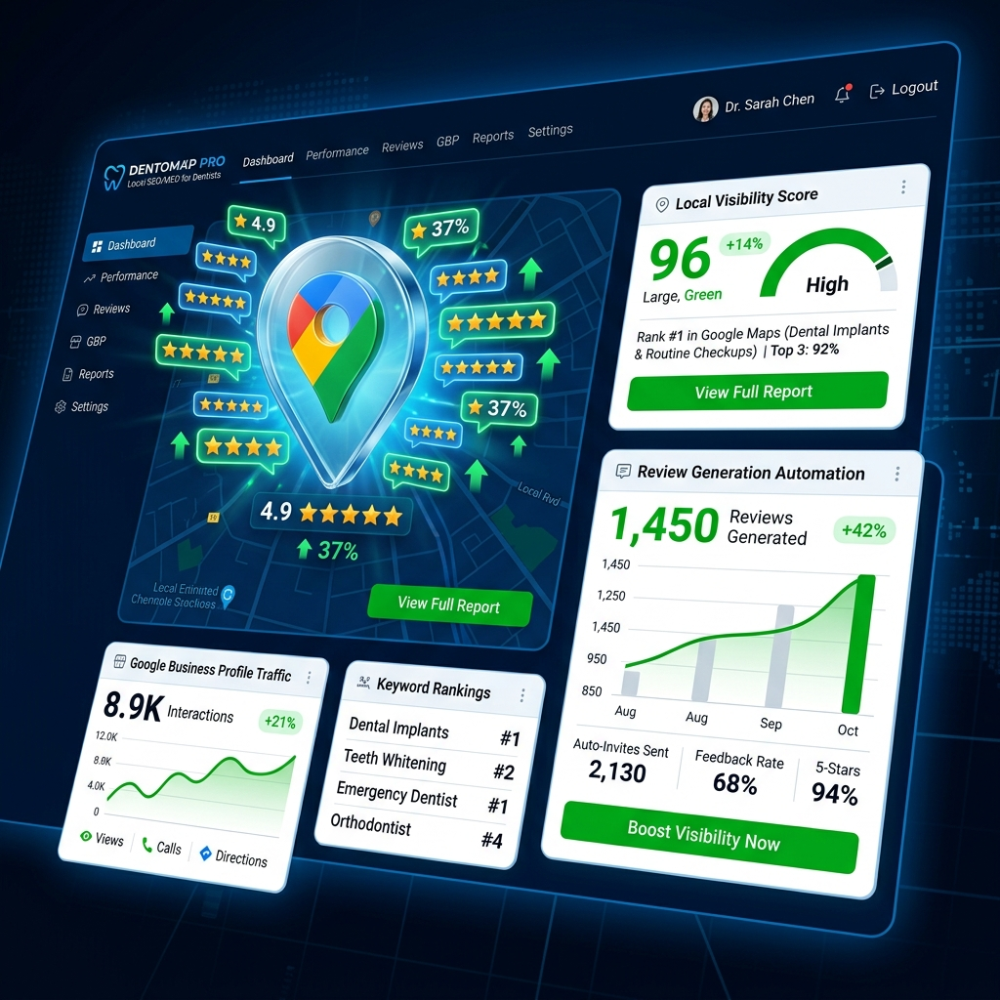

「近くの〇〇」という検索を、
すべてあなたの店に。
現代の集客はGoogleマップを制する者が勝ちます。LOCAL MEOは、複数店舗のMEO（マップ検索エンジン最適化）対策、クチコミ管理、データ分析を全自動で行う、ローカルビジネス向け最強のマーケティングSaaS。

「検索されない」という最大の機会損失
「近くの美味しいカフェ」「今すぐ入れる歯医者」。消費者の行動は、今や100%Googleマップによって決定されています。ここで検索結果のトップ3に入らなければ、あなたの店舗はネット上に存在しないのと同じです。
全店舗のマップ情報を、一つの画面で制圧する
一括情報アップデート
営業時間の変更や新しいメニューの追加を、1つのダッシュボードから全店舗のGoogleビジネスプロフィールへ一瞬で同期。修正漏れを防ぎます。
AIクチコミ自動返信アシスタント
日々寄せられるレビューに対し、AIが「店舗のトーン＆マナー」に合わせた丁寧な返信文を自動生成。炎上リスクを回避しつつ、エンゲージメントを高めます。
ローカル競合トラッキング
半径5km以内のライバル店舗の検索順位やプロモーション状況を常に監視し、「今、どんな施策を打つべきか」をアラート通知します。
「どこから検索されたか」を可視化するヒートマップ
単なる検索回数ではありません。「どの交差点から」「どの駅の出口から」検索された時に、あなたの店が上位表示されたのかを地図上で色分け（ヒートマップ化）。効果的なチラシ配りや看板設置のデータとしても活用できます。
不正なネガティブレビューからの防衛
競合他社からの嫌がらせや、Botによる大量の低評価を検知。Googleのポリシー違反に該当する悪質なクチコミを自動でフラグ付けし、プラットフォームへの削除申請プロセスをワンクリックでサポートします。
Case Study | 全国50店舗の飲食チェーン
全店舗のMEO管理を店長任せにしていた結果、情報のサイロ化とクチコミの放置が起きていた企業。LOCAL MEO導入後、本部で一括管理しAI返信を活用。わずか3ヶ月でマップ経由の経路検索数が全店平均で180%増加し、来店者数の明確な底上げに成功しました。
ローカルビジネスに、デジタルの牙を
美味しい料理や素晴らしいサービスを提供しているのに、知られていない。私たちは、地域に根ざしたビジネスが正当な評価と集客を得られるよう、最強の武器を提供します。